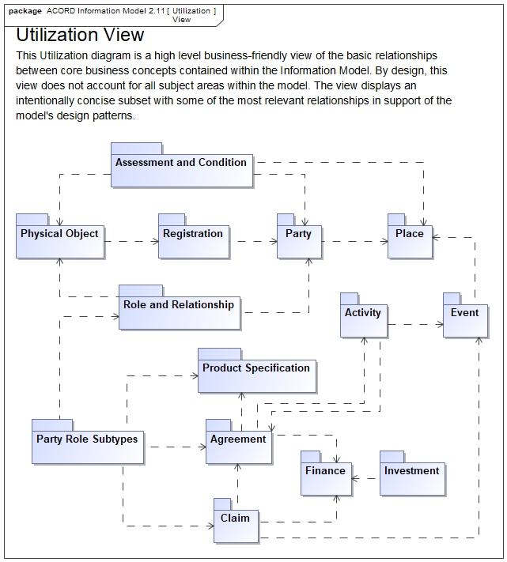

ACORD Information Model 2.11 (July 2023)
What is ACORD?
Established in 1970 as a non-profit organization, ACORD was formed by insurance carriers and agents focused on building efficiencies in the United States property casualty insurance market. Originally named Agent Company Operations Research and Development (ACORD), the organization’s initial goal was to standardize the many proprietary forms being used by carriers for new business and claims submission. In the late 1970s, ACORD began developing electronic standards to complement its form standards. ACORD subsequently expanded both its forms and electronic data standards beyond property and casualty insurance to encompass life and annuity, surety, and reinsurance markets.
What is ACORD Reference Architecture?
The ACORD reference architecture is the insurance industry standard for exchanging data between insurance companies (Further details are available here). It was developed by the Association for Cooperative Operations Research and Development (ACORD) in the 1970s. The ACORD information model covers a wide range of data subject areas such as Agreement, Claim, Party, Physical Object, Contact and Place etc.
At AXA we have a license for ACORD Information Model. It contains data objects and data elements definitions.
The ACORD Information Model is a logical data model designed to provide the insurance industry standard reference upon which physical implementations may be built.
Is it relevant for me?
The are several use cases where a data standard is a relevant tool such as:
- As an employee who has the skill to read a data model, I would like to know the data elements (attributes) of an insurance agreement (policy) and their definitions.
- As a data modeler or API designer I would to check my design against the industry standard.
- In a context of business partnership or platform economy, I need to define a standard for data exchange between several parties (internal or external).
- As a data owner I would like to list the main data objects and data elements for my domain of ownership to define data policies and rules
- As a data analyst or data steward, I would like to leverage a concise data objects/data elements naming and definitions to define data requirements (e.g., functional specifications)
What is new since the 2.5 version?
Compared to the latest version available at AXA (v2.5), below are some examples of changes:
- 2.9 Peril: The concept of Perils has existed in the Common subject areas in the ACORD Model. In this release, Perils is moved to the Product Specification subject area because of its primacy when designing insurance products.
- 2.10 A Driving Event (offense): can be anything from a parking ticket to a DWI (Driving While Intoxicated). While felonies are considered criminal events which are more serious and punishable, evaluated by how much harm is caused, they are not the majority of driving offenses. Typically, driving events are not criminal in nature. In 2.10 release, “Driving Event” is now a subtype of “Event” rather than “Criminal Event”.
- 2.10 Non-Physical Objects: While the vast majority of insurance lines of business cover tangible objects like cars, homes, office buildings, ships ; there are a number of lines that cover intangible, or Non-Physical Objects (e.g., Trade Credit, Cyber, Political Risk).
- 2.11 Non-Physical Objects: New classes are added: Alien Abduction, Business Practice, Reputation, Trade Balance, Insurable Event, Sporting Event, Concert, Wedding
- 2.11 Virtual Party: Virtual Party is extended by adding Virtual Party Details Subtypes: AI or Robotics, Computer System, Installed Software, Remote Health Monitoring System, Remote Monitoring System, Vehicle Telematics
- 2.11 Contact Preference: Contact Preference is how a party wants to interact with your company. This is an important concept between two Parties (sender and receiver), and, for this reason, Contact concepts are moved from the subject area of Place to the subject area of Party.
For more details, release notes are available here :
- ACORD-information-model-2.8 - ReleaseNotes.pdf (April 2021)
- ACORD-information-model-2.9 - ReleaseNotes.pdf (November 2021)
- ACORD-information-model-2.10 - ReleaseNotes.pdf (December 2022)
- ACORD-information-model-2.11 - ReleaseNotes.pdf (July 2023)
How to leverage it and what are the pitfalls to avoid?
ACORD information model is highly normalized, it is a specific taxonomy and as such must NOT be implemented directly in physical models:
- A design exercise is required to extract from the model only the relevant data elements and relations for the use case.
- The taxonomy must be well understood and accepted by the various stakeholders (e.g., Agreement > Financial Service Agreement > Insurance Agreement).
- The existing languages already used by the business teams, IT professionals, and other data practitioners must be considered, and the standardization ambition should be clearly defined.
- Technology constraint should also drive the physical model design (API swagger, JSON/Parquet schemas, relational databases…).
Where can I find it and use it?
- The archive file is available here: ACORD-information-model-2.11.zip
- No specific tooling is required, you can unzip locally and browse the html page here:
ACORD-information-model-2.11\ACORD-Information-Model-2-11\Information Model 2.11\HTML\Index.htmlThe web browser must open the html file with the options “allow-file-access-from-files”. Exemple for Microsoft Edge (same for Google Chrome):
msedge.exe --allow-file-access-from-filesNote: if any issue, you must kill web brower processes before launching the web browser with the new configuration.
What are the alternatives?
ACORD is the more robust information model for insurance industry. Other regional models can be used also for inspiration, for example Othe bject Management Group (OMG) has publihsed a model for Property & Casualty.
For other exemples of data models, please consult: Reference Codifications - Data Models.
Licence
ACORD-AXA Group - IP License Agreement - ACD100204.pdf
Contacts
For more information, please contact: Pastel GBETOHO or Guillaume HERVOUIN.
ACORD Packages utilization view

ACORD usage example
ACORD Packages overview
| Package | High level description | Overview |
|---|---|---|
| Activity | The Activity package defines the various activities that are associated with the insurance business, especially those in the underwriting and claims management areas. | Activity Diagram |
| Claim | This package defines all concepts associated with claims, including relationships to loss event(s) and agreement(s). | Claim Diagram |
| Event | The Event package contains information about events that is of interest to the insurance organization. | Event Diagram |
| Party | Package containing all information regarding Parties, or external or internal business entities a carrier deals with. The main forms being a Person or an Organization. | Party Diagram |
| Agreement | The agreement package defines the various agreements, including related components, that are associated with the insurance business. The term “agreement” is inclusive of the terms “contract” and/or “policy”. | Agreement Diagram |
| Common Elements | Common Elements contains classes and enumerations that are used throughout the model. That is, elements that are orthogonal to the model. | Common Elements Diagram |
| Finance | The Finance package orients primarily around the finances of an insurance company as seen from an accountant’s perspective. | Finance Diagram |
| Physical Object | The objective of the Physical Object package is to define physical objects such as vehicles, houses, animals, or any grouping of these from a policy risk and claims management perspective. | Physical Object Diagram |
| Assessment and Condition | The AssessmentResult type is used to represent the results of an evaluation (assessment activity) based on a subjective opinion or a scientific approach. Condition is the state of a party, place, or a physical object at a given point in time. | Assessment and Condition Diagram |
| Contact and Place | This package defines all concepts associated with contact and place. Contact includes the party acting as the “contact point” as well as the related contact options (e.g. telephone, email, etc.) and preferences. Place includes the physical location at which the contact can be found. | Contact and Place Diagram |
| Investment | The investment package makes it possible to model various types of investments that are of interest to the modeled organization from an operational point of view. It is used to model the management of an organization’s assets. | Investment Diagram |
| Product Specification | The Product Specification package makes it possible to model insurance products in a generic fashion. This package includes all the building blocks necessary for defining products for all lines of business including P&C, Life and Reinsurance and investment products. | Product Specification Diagram |
| Category | The Category package makes it possible to model a dynamic categorization of the objects in the business model (InformationModelObjects) by defining sets of objects and by allowing an object to belong to multiple sets at a time. | Category Diagram |
| Document and Communication | This package defines concepts associated with documents and communication. The document concept applies to all types of documents (e.g. an expert report, a letter with free text, passport, etc.). The communication concept applies to the receiving or sending (or the intention to send) of a communication between two parties and includes the communication content (e.g. text, sound, image, etc.). | Document and Communication Diagram |
| Marketing | This package defines concepts associated with marketing, including associations with related concepts such as product and agreement. Marketing includes objectives, campaigns, relevant party roles, and target markets/audiences. | Marketing Diagram |
| Registration | This package defines concepts associated with various types of registration. A registration is considered a formal recording, by an authorized body, of the granting of rights, privileges, favors, statuses, or qualifications. Registrations are important from the perspective of being a qualified source of information. They are similar to assessments in the respect that the associated information can be considered more reliable than the same information not associated with a registration. | Registration Diagram |
| Role and Relationship | This package defines concepts involving roles and relationships. A party can play different types of party roles through the Role and Relationship. OR The Role and Relationships enables you to associate multiple roles to an Party. | Role and Relationship Diagram |
{kind=link}
{kind=link}
{kind=link}
{kind=link}
{kind=link}
{kind=link}
{kind=link}
{kind=link}
{kind=link}
{kind=link}
{kind=link}
{kind=link}
{kind=link}
{kind=link}
{kind=link}
{kind=link}
{kind=link}
Illustration 1: Boat Insurable Physical Object Role in Place
Illustration 2: Taxonomy: Physical Object > … > Boat